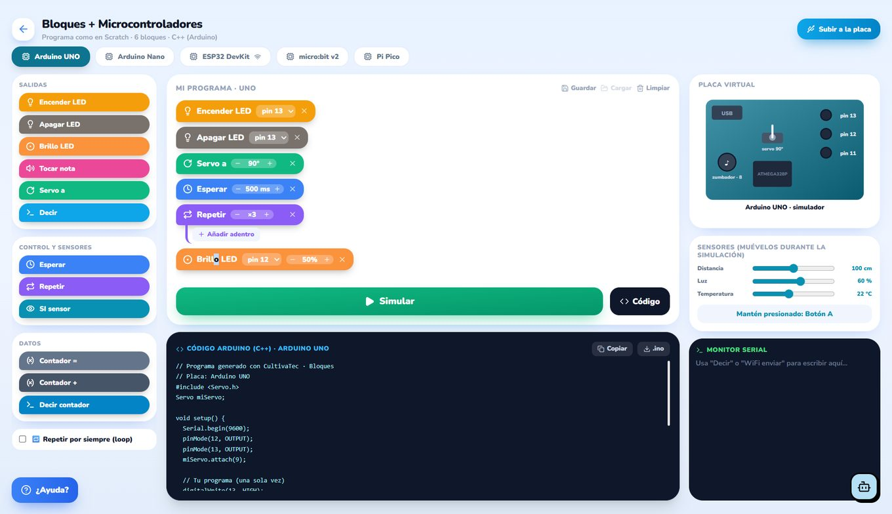
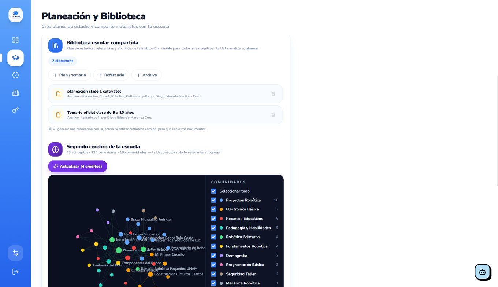

Alumnos
- Simuladores ilimitados
- Chip disponible siempre
- Misiones, logros y glosario
- Portafolio de proyectos
Simuladores, tutoría con inteligencia artificial y gestión académica real. Todo en app.cultivatec.com.mx, sin instalar nada y desde cualquier dispositivo.
Solicitar demoEquivocarse es gratis: el estudiante puede quemar un LED mil veces, recompilar su código o rediseñar una pieza tantas veces como necesite.
Coloca, cablea, mide y simula. El circuito se comporta como en el laboratorio real: si hay un corto, se nota.

Los componentes se arrastran desde el panel derecho y se cablean pin a pin.
Se programa como en Scratch y la plataforma escribe el C++ real al lado. El alumno ve la equivalencia todo el tiempo.

«Subir a la placa» permite pasar del simulador al hardware real del kit.
Modelado por figuras y operaciones booleanas, con la misma lógica de agrupar/perforar que ya conocen los maestros de Tinkercad.

Vistas 3D, arriba, frente y lado, más importación de STL externos.
«No te doy la respuesta: te ayudo a encontrarla». Ese es literalmente el lema con el que trabaja nuestra IA. Cuando un alumno se atora, Chip le devuelve una pregunta que lo acerca a la solución.

Dos preguntas después, el alumno llegó solo a «la polaridad». Chip nunca se la dijo.
El alumno entra a su aula con un código y ve exactamente cuál es su siguiente misión. Cada reto desbloquea el siguiente.

El código de aula (arriba a la derecha) es lo único que necesita el alumno para entrar.
El maestro deja de perder tardes escribiendo secuencias didácticas y persiguiendo calificaciones. Todo queda en su histórico y se exporta a PDF.

Respondes un cuestionario rápido —o lo platicas con la IA— y sale el plan de semestre o parcial, con recursos de la plataforma, prácticas en simuladores y referencias.
Sube el plan de estudios y los materiales oficiales de tu institución. La IA los analiza y construye un mapa de conceptos que consulta al planear.

43 conceptos y 124 conexiones extraídos de los documentos que subió la escuela.
No hay planes recortados ni módulos que se cobran aparte: la licencia escolar abre la plataforma completa para alumnos y docentes.
Nuestra app para Android convierte el aprendizaje de robotica en un juego por niveles: retos diarios, rachas e insignias para que el alumno siga practicando en casa. Su avance cuenta dentro de la ruta que ve el docente.
En la demo cargamos un tema de tu programa y te mostramos la planeación que genera la IA.